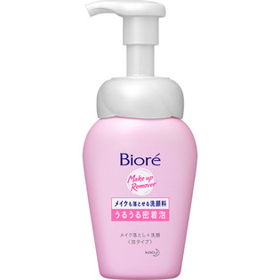

返回列表
产品名称：ビオレ メイクも落とせる洗顔料 うるうる密着泡 本体

花王 ビオレ メイクも落とせる洗顔料 うるうる密着泡 本体 １６０ＭＬ
メーカー 花王
JANコード 4901301242945
商品の特徴
密着泡で包んで落とす
メイク落とし＋洗顔
泡タイプ
- 成分・分量
- 水、グリセリン、PPG-9ジグリセリル、ラウリルヒドロキシスルタイン、デシルグルコシド、エタノール、ラウリン酸、ミリスチン酸、パルミチン酸、ラウレス硫酸Ｎａ、水酸化Ｋ、水酸化Na、ノバラエキス、ローヤルゼリーエキス、BG、エトキシジグリコール、ベタイン、フェノキシエタノール、香料
- 用法及び用量
- ・適量（ポンプ2～3押し程度）を手に取って洗い、あとはよく流します。落ちにくいメイクの時は、量を多めにして洗ってください。
・直接水がかかる状態でポンプを押さないでください。
・「うるうる密着泡」以外の商品をつめかえないでください。
容器は振らない。傾けて使用しない。
泡にならないことがあります。